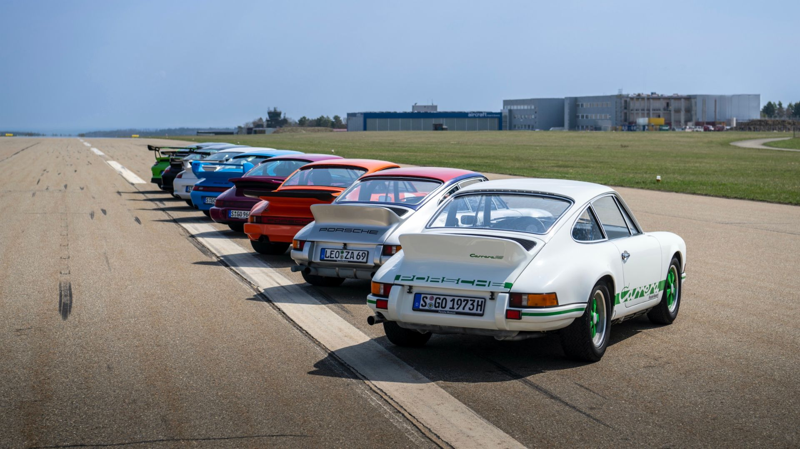

911 Carrera

Hace 60 años, Porsche desarrolló una variante del 911 para correr en pistas y en rallys: el Carrera RS 2.7. Fue el precursor de sucesivas generaciones RS del 911 que, como el original, constituyen el vínculo más directo entre el automovilismo deportivo y la carretera.
Cola de Pato’, ‘RS’ o ‘2.7’. El Porsche 911 Carrera RS 2.7 tiene muchos apodos hoy en día. Fue el auto de producción alemán más rápido en su época y el primer modelo de serie con un spoiler delantero y uno trasero, el que le dio el sobrenombre ‘Entenbürzel’ (‘Cola de Pato’). Porsche estableció así una tendencia en 1972: autos deportivos para carretera abierta con spoiler trasero.
Fue hace unos 50 años cuando Porsche comenzó a desarrollar el 911 Carrera RS 2.7. "Estaba destinado a ser un vehículo de homologación, un deportivo muy ligero y rápido", dijo Peter Falk, entonces Jefe de Pruebas de Vehículos de Producción en Porsche. Se convirtió en un auto de pista y rally con muchas innovaciones técnicas, fue la versión más potente de la primera generación del nuevo deportivo de Stuttgart y el primer 911 con el apellido ‘Carrera’. Alrededor de 15 ingenieros se ocuparon del desarrollo a partir de mayo de 1972. Entre ellos estaban Tilman Brodbeck y Hermann Burst, además de los operarios de producción. Todos ellos trabajaron intensamente para mejorar el peso, la aerodinámica, el motor y el chasís.
Inicialmente, Porsche tenía prevista una producción de 500 unidades y la homologación del 911 Carrera RS 2.7 en el Grupo 4, los auto GT especiales. Por ello se convirtió en un vehículo apto para uso en carretera que los clientes también podían utilizar en carreras en pista. El 5 de octubre de 1972 fue presentado en el Salón del Automóvil de París, en la Puerta de Versalles, y a finales de noviembre ya habían sido vendidos los 500 previstos. Porsche, sorprendida por el éxito, triplicó la producción: en julio de 1973 ya había fabricado 1580 unidades, por lo que el Porsche 911 Carrera RS 2.7 fue también homologó dentro del Grupo 3 a partir del número 1000. De esas 1580 unidades, 17 fueron la versión base; 1308 la versión Touring (paquete opcional M472); 200 la versión aligerada ‘Sport’ (paquete opcional M471) y 55 ejemplares específicamente para el automovilismo deportivo.
El nuevo motor bóxer de seis cilindros y 2.7 litros con inyección de combustible desarrollado por Hans Mezger y Valentin Schäffer generaba 210 CV de potencia a 6300 rpm y 255 Nm de par a 5100 rpm. El aumento de la cilindrada fue posible, entre otras cosas, por un fino revestimiento de Nikasil en los cilindros. Para seguir siendo funcional en uso diario, la relación de compresión, la distribución y el diámetro de las válvulas no cambiaron con relación al motor de 2.4 litros. En la versión Sport, la potencia hacía posible acelerar de 0 a 100 km/h en 5,8 segundos. Esto convirtió al 911 Carrera RS 2.7 en el primer auto de producción en serie que superó la marca de seis segundos en las pruebas de la revista alemana auto, motor und sport. La velocidad máxima pasaba de 245 km/h. Los datos de la versión Touring eran 6,3 segundos y 240 km/h. El RS 2.7 es la síntesis perfecta entre peso, prestaciones, aerodinámica y estabilidad.
Los ingenieros, desarrollaron un spoiler trasero, puesto a prueba en el túnel de viento y en pistas de ensayo. El objetivo era mantener el carácter del 911, compensar la desventaja de la parte trasera inclinada con medidas adecuadas, aunque estilísticamente aceptables, y mejorar así la aerodinámica del 911.